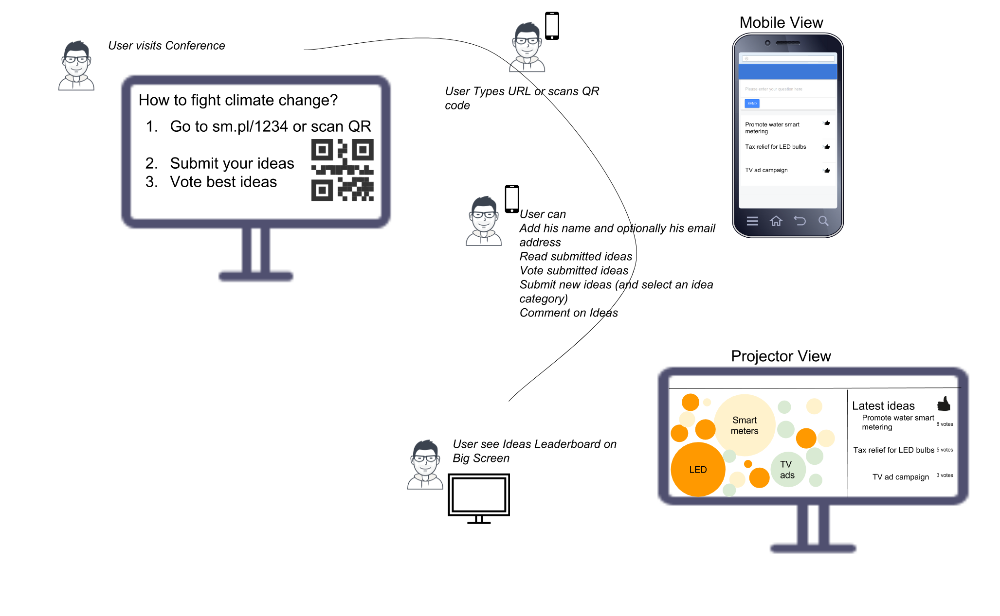

To deliver a fully functional proof of concept to collect and visualize ideas within 5 days, just in time for the Climate Week (NYC) event.
Vulnerable areas of our planet might be in danger if we fail to peak greenhouse gas emissions by 2020 affecting the lives of billions of people.

Mission 2020 is a new type of collaborative venture that is bringing together institutions, governments and the private sector to achieve peaking of global emissions by 2020. Because the imperative to peak by 2020 has not been widely understood, Mission 2020 is working on two priority areas: raising awareness so that there is an urgency for change and generating the conditions for action.
In this context, Mission 2020, alongside the 71st Session of the United Nations General Assembly and in support of Climate Week 2016, was hosting the Climate Action Strategy Hub, to serve as a physical landing space for individuals and organization across the broad spectrum of the climate movement.
On Tuesday the 13th of September (-6 days before the event kick-off), we were approached by Systemiq and Mission 2020. They were looking for a bespoke interactive digital platform to do the following:
And a small detail ... it needed to be ready by Sunday at the latest.
Our first reaction to the brief was: “It looks too tight, we will not make it”. We had less than 3 hours to come back to the client to evaluate if it was feasible and accept or reject the challenge.
After discussing with our Engineering team we decided to take the risk.
On Wednesday (- 5 days to go) we had a meeting in London to discuss the details and validate precisely the requirements. We bring a rough storyboard to help visualize the project.
Due to time pressure, it was time to discuss alternatives (in case we were unable to deliver) and core features (“What could be the minimum acceptable product?” “Which features could wait?” )
Once the requirements were understood and agreed, we started immediately, there was no time to lose.
By Thursday we had the wireframes of the application ready and the backend was ready on Friday. Our UI designer started on Saturday (ideally he should have started at the beginning) and started working on the Visualization.
By Saturday also the web app to submit and interact with the ideas was ready to test. We spent the weekend testing, reporting and correcting bugs, collaborating using a Trello Board.

By Monday (-14 hours to go, the time difference with NYC play in favour) we were ready!


During the week, and using again the time difference, we managed to deploy the new app layout.